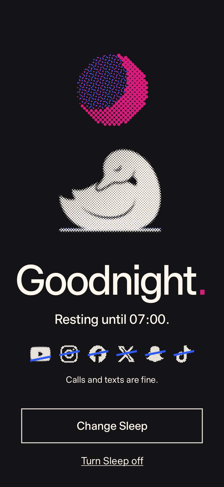

<!doctype html>
<html lang="en">
<head>
<meta charset="utf-8">
<title>Idyll showcase</title>
<link rel="stylesheet" href="../../fonts.css">
<style>
/* Two short Idyll showcase videos. ?v=tour (19.5 s) | keep (16 s), &fmt=story (1080 x 1920) | square (1080 x 1080).
   Deterministic: window.seek(t) draws the frame at t seconds; window.DURATION is the length.
   Story text stays inside 250 to 1670 (Instagram's story safe zone). Screens are the Android app's own renders, in showcase-shots/. */
:root { --paper: #f6f5f1; --ink: #141416; --pink: #d81b7a; --blue: #2d5bff; --cream: #fff6ee; --night: #141416;
  --sans: "Timeless Sans", "Helvetica Neue", Arial, sans-serif; --mono: "Paper Mono", ui-monospace, Menlo, monospace; }
* { box-sizing: border-box; }
html, body { margin: 0; width: 1080px; overflow: hidden; background: var(--night); -webkit-font-smoothing: antialiased; }
h1, h2, p { margin: 0; }
#stage { position: relative; width: 1080px; overflow: hidden; }
.scene { position: absolute; inset: 0; overflow: hidden; display: none; }
.scene > .in { position: absolute; inset: 0; will-change: transform; }
.magenta { background: var(--pink); color: var(--cream); }
.blue { background: var(--blue); color: var(--cream); }
.night { background: var(--night); color: var(--cream); }
.paper { background: var(--paper); color: var(--ink); }
.pk { color: var(--pink); font-weight: inherit; } .ik { color: var(--ink); font-weight: inherit; } .bk { color: var(--blue); font-weight: inherit; }
.crop { --c: var(--cream); --l: 22px; position: absolute; inset: 40px; pointer-events: none; z-index: 30;
  background:
    linear-gradient(var(--c), var(--c)) 0 0 / var(--l) 2px no-repeat, linear-gradient(var(--c), var(--c)) 0 0 / 2px var(--l) no-repeat,
    linear-gradient(var(--c), var(--c)) 100% 0 / var(--l) 2px no-repeat, linear-gradient(var(--c), var(--c)) 100% 0 / 2px var(--l) no-repeat,
    linear-gradient(var(--c), var(--c)) 0 100% / var(--l) 2px no-repeat, linear-gradient(var(--c), var(--c)) 0 100% / 2px var(--l) no-repeat,
    linear-gradient(var(--c), var(--c)) 100% 100% / var(--l) 2px no-repeat, linear-gradient(var(--c), var(--c)) 100% 100% / 2px var(--l) no-repeat; }
.paper .crop { --c: var(--ink); }
.night .crop { --c: #6f6b68; }
canvas { display: block; position: absolute; }
.cap { position: absolute; left: 80px; right: 80px; text-align: center; font: 500 112px/.94 var(--sans); letter-spacing: -.052em; z-index: 20; will-change: opacity, transform; }
.cap.l { text-align: left; }
.cap.big { font-size: 200px; line-height: .88; letter-spacing: -.062em; }
.cap.s { font: 400 50px/1.25 var(--sans); letter-spacing: -.012em; }
.blue .cap, .blue .reg { text-shadow: 3px 2px 0 rgba(216,27,122,.45); }
.magenta .cap, .magenta .reg { text-shadow: 3px 2px 0 rgba(45,91,255,.4); }
.night .cap, .night .reg { text-shadow: 3px 2px 0 rgba(216,27,122,.4); }
.paper .cap { text-shadow: 3px 2px 0 rgba(45,91,255,.22); }
.cap.s { text-shadow: none !important; }
/* Real app screens: a white phone page with the brand's hard shadow. The img inside pans and zooms. */
.scr { position: absolute; border-radius: 52px; overflow: hidden; background: #fff; box-shadow: 18px 18px 0 var(--ink); will-change: transform, opacity; z-index: 12; }
.night .scr { box-shadow: 18px 18px 0 #000; outline: 3px solid #4a4850; }
.scr img { display: block; width: 100%; transform-origin: 50% 0; will-change: transform; }
.grain { position: absolute; inset: 0; pointer-events: none; z-index: 40; opacity: .36; mix-blend-mode: multiply;
  background-image: url("data:image/svg+xml,%3Csvg xmlns='http://www.w3.org/2000/svg' width='240' height='240'%3E%3Cfilter id='n'%3E%3CfeTurbulence type='fractalNoise' baseFrequency='.9' numOctaves='2' stitchTiles='stitch'/%3E%3CfeColorMatrix values='0 0 0 0 .45 0 0 0 0 .05 0 0 0 0 .25 0 0 0 .9 -.42'/%3E%3C/filter%3E%3Crect width='100%25' height='100%25' filter='url(%23n)'/%3E%3C/svg%3E"); }
.night .grain { mix-blend-mode: screen; opacity: .07; }
.paper .grain { opacity: .2; }
.card { position: absolute; left: 110px; width: 860px; background: var(--cream); border: 3px solid var(--ink); }
/* The list in Keep your people: what stays gets a tick, what goes gets struck through in the app's way. */
/* A plain phone home screen: brand tiles as a launcher shows them, a tap, then the app's launch zoom. */
.lau { position: absolute; inset: 0; z-index: 4; background: #e9e3d9; color: #1c1b1f; font-family: var(--sans); }
.lau .clk { position: absolute; left: 0; right: 0; text-align: center; font-weight: 300; letter-spacing: -.04em; }
.lau .day { position: absolute; left: 0; right: 0; text-align: center; opacity: .7; }
.lau .grid { position: absolute; display: grid; grid-template-columns: repeat(4, 1fr); }
.lau .ap { display: grid; justify-items: center; }
.lau .tl { position: relative; border-radius: 26%; overflow: hidden; box-shadow: 0 2px 6px rgba(20,20,22,.12); }
.lau .tl i { position: absolute; inset: 0; -webkit-mask: var(--m) center / 56% no-repeat; mask: var(--m) center / 56% no-repeat; }
.lau .tl img { width: 100%; height: 100%; display: block; }
.lau .lb { opacity: .8; white-space: nowrap; }
.tap { position: absolute; border-radius: 50%; z-index: 7; pointer-events: none; }
.splash { position: absolute; z-index: 6; background: #fff; }
.li { position: absolute; left: 110px; right: 80px; font: 500 104px/1 var(--sans); letter-spacing: -.05em; z-index: 20; white-space: nowrap; }
.li .tk { display: inline-block; width: 74px; height: 74px; margin-right: 26px; vertical-align: -6px; }
.li .st { position: absolute; left: -10px; top: 52%; height: 11px; background: var(--pink); transform-origin: 0 50%; }
</style>
</head>
<body>
<svg width="0" height="0" style="position:absolute"><filter id="vblur" x="-5%" y="-20%" width="110%" height="140%"><feGaussianBlur id="vblurk" stdDeviation="0 0"/></filter></svg>
<div id="stage"></div>
<script>window.IDYLL_ROOT = '../../';</script>
<script src="print.js"></script>
<script>
(async () => {
  const q = new URLSearchParams(location.search);
  const V = q.get('v') || 'tour', SQ = q.get('fmt') === 'square';
  const W = 1080, H = SQ ? 1080 : 1920;
  const stage = document.getElementById('stage');
  document.body.style.height = stage.style.height = H + 'px';
  const clamp = v => v < 0 ? 0 : v > 1 ? 1 : v;
  const out3 = t => 1 - Math.pow(1 - clamp(t), 3), out5 = t => 1 - Math.pow(1 - clamp(t), 5);
  const io = t => { t = clamp(t); return t < .5 ? 4 * t * t * t : 1 - Math.pow(-2 * t + 2, 3) / 2; };
  const sine = t => .5 - .5 * Math.cos(Math.PI * clamp(t));
  const lerp = (a, b, k) => a + (b - a) * k;
  const C = { pink: '#d81b7a', blue: '#2d5bff', cream: '#fff6ee', ink: '#141416' };
  const mk = (parent, html) => { const d = document.createElement('div'); d.innerHTML = html.trim(); const e = d.firstElementChild; parent.appendChild(e); return e; };

  /* Scenes push in from below: the new plate is revealed bottom up while the old one rides up and away. */
  const scenes = [];
  const scene = (cls, at, fade = 0) => {
    const s = mk(stage, `<section class="scene ${cls}"><div class="in"></div><div class="crop"></div><div class="grain"></div></section>`);
    const o = { s, in: s.firstElementChild, at, fade }; scenes.push(o); return o;
  };
  const PUSH = .75;
  function drawScenes(t) {
    scenes.forEach((o, i) => {
      const next = scenes[i + 1];
      const vis = t >= o.at && (!next || t < next.at + (next.fade || PUSH));
      o.s.style.display = vis ? 'block' : 'none';
      if (!vis) return;
      if (o.fade) { o.s.style.opacity = io((t - o.at) / o.fade).toFixed(3); o.s.style.clipPath = 'none'; o.in.style.transform = 'none'; return; }
      const k = i === 0 ? 1 : io((t - o.at) / PUSH);
      o.s.style.clipPath = k < 1 ? `inset(${((1 - k) * 100).toFixed(3)}% 0 0 0)` : 'none';
      const away = next && !next.fade ? io((t - next.at) / PUSH) : 0;
      o.in.style.transform = `translateY(${((1 - k) * H * .22 - away * H * .27).toFixed(2)}px)`;
    });
  }

  const land = (el, t, at, dur = .6, rise = 30) => { const k = out3((t - at) / dur); el.style.opacity = k; el.style.transform = `translateY(${(1 - k) * rise}px)`; return k; };
  const leave = (el, t, at, dur = .3) => { if (t > at) el.style.opacity = Math.min(+el.style.opacity, 1 - clamp((t - at) / dur)); };
  const cap = (parent, html, top, cls = '', style = '') => mk(parent, `<h1 class="cap ${cls}" style="top:${top}px;${style}">${html}</h1>`);
  /* Square: a caption in the left column, set left, centred on the screen beside it. */
  const sideCap = (parent, html, size = 92) => cap(parent, html, 0, 'l', `left:76px;right:auto;width:470px;font-size:${size}px;top:50%;margin-top:-${size}px`);
  /* One frame, several renders of the same screen: only the current one shows, all move together. */
  const variants = (sh, names) => {
    const imgs = [sh.img, ...names.slice(1).map(n => mk(sh.el, ``))];
    if (names[0] !== null) sh.img.src = `showcase-shots/${names[0]}.png`;
    return i => imgs.forEach((im, j) => { if (j) { im.style.transform = sh.img.style.transform; im.style.transformOrigin = sh.img.style.transformOrigin; } im.style.opacity = j === i ? 1 : 0; });
  };
  /* A caption whose number changes on the beat, with a small lift as it lands. */
  const swapCap = (el, list, times, t) => { let i = 0; times.forEach((tt, j) => { if (t >= tt) i = j; }); const sp = el.querySelector('.n'); if (sp.textContent !== list[i]) sp.textContent = list[i]; const k = out3((t - times[i]) / .25); sp.style.display = 'inline-block'; sp.style.transform = `translateY(${(i ? (1 - k) * 14 : 0).toFixed(1)}px)`; sp.style.opacity = i ? .4 + .6 * k : 1; return i; };

  /* A real screen in a frame. cam(t) moves the frame (y, scale) and the page inside it (pan, zoom). */
  const shot = (parent, name, x, y, w, h) => {
    const el = mk(parent, `<div class="scr" style="left:${x}px;top:${y}px;width:${w}px;height:${h}px"></div>`);
    return { el, img: el.firstElementChild, w, h };
  };
  const pose = (sh, o) => {
    sh.el.style.opacity = o.op ?? 1;
    sh.el.style.transform = `translateY(${(o.y || 0).toFixed(2)}px) rotate(${(o.r || 0).toFixed(3)}deg) scale(${(o.s || 1).toFixed(4)})`;
    sh.img.style.transformOrigin = `50% ${o.oy ?? 0}px`;
    sh.img.style.transform = `translateY(${(-(o.pan || 0)).toFixed(2)}px) scale(${(o.z || 1).toFixed(4)})`;
  };
  /* An app sheet rising over a screen, with the app's own dim behind it. */
  const sheet = (sh, name) => {
    const dim = mk(sh.el, `<div style="position:absolute;inset:0;background:#141416;opacity:0;z-index:2"></div>`);
    const im = mk(sh.el, ``);
    return (t, at) => { const k = out5((t - at) / .7); dim.style.opacity = (.32 * k).toFixed(3); im.style.transform = `translateY(${((1 - k) * 105).toFixed(2)}%)`; };
  };
  /* Rises in from below, then drifts: the page scrolls (pan) and the camera leans in (z) the whole time it's on screen. */
  const glide = (sh, t, at, dur, { rise = 1100, pan = [0, 0], z = [1, 1], oy = 0, s = [1, 1], r = 0 } = {}) => {
    const k = out5((t - at) / 1.0), m = sine((t - at - .3) / dur);
    pose(sh, { y: (1 - k) * rise, r: (1 - k) * r, s: lerp(s[0], s[1], m), pan: lerp(pan[0], pan[1], m), z: lerp(z[0], z[1], m), oy });
  };

  /* Halftone prints, as in ads.html: a pose PNG through a rotated screen, dots growing in. */
  function rng(seed) { let s = seed >>> 0; return () => { s = (s + 0x6D2B79F5) >>> 0; let t = s; t = Math.imul(t ^ t >>> 15, t | 1); t ^= t + Math.imul(t ^ t >>> 7, t | 61); return ((t ^ t >>> 14) >>> 0) / 4294967296; }; }
  function screen(a, w, h, c, ang, tone, rk, delay, rnd) {
    const out = [], ca = Math.cos(ang), sa = Math.sin(ang), cx = w / 2, cy = h / 2, n = Math.ceil(Math.hypot(w, h) / c / 2) + 2;
    for (let j = -n; j <= n; j++) for (let i = -n; i <= n; i++) {
      const x = cx + (i * ca - j * sa) * c, y = cy + (i * sa + j * ca) * c;
      if (x < 0 || y < 0 || x >= w || y >= h) continue;
      const v = a[((y | 0) * w + (x | 0)) * 4 + 3] / 255 * tone(x / w, y / h);
      if (v < .05) continue;
      out.push({ x, y, r: c * rk * Math.sqrt(Math.min(v, 1)), d: delay(x / w, y / h) + rnd() });
    }
    return out;
  }
  const load = src => new Promise((res, rej) => { const i = new Image(); i.onload = () => res(i); i.onerror = rej; i.src = src; });
  async function printer(cv, { pose, mask, ink, water, seed = 5, dur = 1.4, cellK = 120, flat = false }) {
    const w = cv.width = Math.round(parseFloat(cv.style.width)), h = cv.height = Math.round(parseFloat(cv.style.height)), g = cv.getContext('2d');
    const m = document.createElement('canvas'); m.width = w; m.height = h;
    const mg = m.getContext('2d', { willReadFrequently: true });
    const cell = Math.max(6.5, w / cellK); mg.filter = `blur(${cell * .45}px)`;
    if (pose) mg.drawImage(await load(`../../img/cygnet-${pose}-mark.png`), 0, 0, w, h); else mask(mg, w, h);
    const a = mg.getImageData(0, 0, w, h).data, rnd = rng(seed);
    const dl = (u, v) => (v * .35 + u * .65) * dur * .7, jit = () => rnd() * dur * .22;
    const layers = [];
    if (water) layers.push({ col: water, dx: 3 * cell / 4.5, dy: -2 * cell / 4.5, dots: screen(a, w, h, cell * .9, 15 * Math.PI / 180, (u, v) => .45 * Math.max(0, (v - .66) * 2.6) ** 1.4, .56, dl, jit) });
    layers.push({ col: ink, dx: 0, dy: 0, dots: screen(a, w, h, cell, 45 * Math.PI / 180, flat ? () => 1 : (u, v) => .5 + .5 * Math.min(1, .25 + 1.1 * u * u + .6 * v), .56, dl, jit) });
    let last = null;
    return s => {
      const q = Math.round(s * 60) / 60; if (q === last) return; last = q;
      g.clearRect(0, 0, w, h);
      for (const L of layers) { g.fillStyle = L.col; g.beginPath(); for (const d of L.dots) { const r = d.r * out3((q - d.d) / .35); if (r < .3) continue; g.moveTo(d.x + L.dx + r, d.y + L.dy); g.arc(d.x + L.dx, d.y + L.dy, r, 0, 6.2832); } g.fill(); }
    };
  }
  async function grains(cv, pose, col, seed = 3) {
    const w = cv.width = Math.round(parseFloat(cv.style.width)), h = cv.height = Math.round(parseFloat(cv.style.height)), g = cv.getContext('2d');
    const m = document.createElement('canvas'); m.width = w; m.height = h; const mg = m.getContext('2d', { willReadFrequently: true });
    mg.drawImage(await load(`../../img/cygnet-${pose}-grains.png`), 0, 0, w, h);
    const a = mg.getImageData(0, 0, w, h).data, seen = new Uint8Array(w * h), blobs = [], rnd = rng(seed);
    for (let i = 0; i < w * h; i++) {
      if (seen[i] || a[i * 4 + 3] < 128) continue;
      let n = 0, sx = 0, sy = 0; const st = [i]; seen[i] = 1;
      while (st.length) { const j = st.pop(), x = j % w, y = (j / w) | 0; n++; sx += x; sy += y;
        for (const k of [j - 1, j + 1, j - w, j + w]) if (k >= 0 && k < w * h && !seen[k] && a[k * 4 + 3] >= 128 && Math.abs((k % w) - x) <= 1) { seen[k] = 1; st.push(k); } }
      if (n > 6) blobs.push({ x: sx / n, y: sy / n, r: Math.sqrt(n / Math.PI), d: rnd() });
    }
    return (s, spread = .9) => {
      g.clearRect(0, 0, w, h); g.fillStyle = col; g.beginPath();
      for (const b of blobs) { const k = out3((s - b.d * spread) / .45); if (k <= 0) continue; const y = b.y - (1 - k) * 36; g.moveTo(b.x + 3 + b.r * k, y - 2); g.arc(b.x + 3, y - 2, b.r * k, 0, 6.2832); }
      g.fill();
    };
  }
  const canvasAt = (parent, x, y, w, h, z = 10) => mk(parent, `<canvas style="left:${x}px;top:${y}px;width:${w}px;height:${h}px;z-index:${z}"></canvas>`);
  const POSE = { family: 959 / 1806, pair: 760 / 1969, focus: 797 / 1466, sleep: 760 / 1280, feather: 759 / 1663, stretch: 761 / 1282, skip: 935 / 1747, eat: 874 / 1710 };
  const print = async (parent, p, w, top, o) => { const h = Math.round(w * POSE[p]); const cv = canvasAt(parent, (W - w) / 2, top, w, h, o.z || 10); return { cv, h, paint: await printer(cv, { pose: p, ...o }) }; };

  /* A column of feed cards: halftone noise in the brand inks, a feed's shape without anyone's posts. */
  async function feedCards(parent, n, seed) {
    const cards = [], rnd = rng(seed); let y = 0;
    for (let i = 0; i < n; i++) {
      const hh = [640, 860, 700][i % 3];
      const card = mk(parent, `<div class="card" style="top:${y}px;height:${hh}px"></div>`);
      const inks = [C.pink, C.blue, C.ink], col = inks[i % 3], col2 = inks[(i + 1) % 3];
      const p = await printer(canvasAt(card, 0, 0, 854, hh - 6, 1), { flat: true, ink: col, seed: 30 + i, dur: .01, cellK: 64, mask: (g, w, h) => {
        g.fillStyle = '#000'; g.beginPath(); g.arc(66, 66, 36, 0, 7); g.fill();
        g.fillRect(124, 46, 240, 22); g.globalAlpha = .5; g.fillRect(124, 82, 160, 16); g.globalAlpha = 1;
        const top = 132, mh = h - 270, gr = g.createLinearGradient(0, top, w, top + mh); gr.addColorStop(0, 'rgba(0,0,0,.95)'); gr.addColorStop(1, 'rgba(0,0,0,.25)');
        g.fillStyle = gr; g.fillRect(0, top, w, mh);
        g.fillStyle = '#000'; g.globalAlpha = .55; g.fillRect(30, top + mh + 36, 500, 22); g.fillRect(30, top + mh + 74, 330, 22); g.globalAlpha = 1;
      } });
      p(5);
      const p2 = await printer(canvasAt(card, 0, 0, 854, hh - 6, 2), { flat: true, ink: col2, seed: 60 + i, dur: .01, cellK: 42, mask: (g, w, h) => {
        g.fillStyle = '#000'; const top = 132, mh = h - 270, sh = i % 4;
        if (sh === 0) { g.beginPath(); g.arc(w * .62, top + mh * .5, mh * .32, 0, 7); g.fill(); }
        if (sh === 1) for (let k = 0; k < 5; k++) g.fillRect(0, top + 40 + k * mh / 5, w, mh / 12);
        if (sh === 2) { g.beginPath(); g.moveTo(w * .15, top + mh * .85); g.lineTo(w * .5, top + mh * .15); g.lineTo(w * .85, top + mh * .85); g.fill(); }
        if (sh === 3) g.fillRect(w * .2, top + mh * .2, w * .6, mh * .6);
      } });
      p2(5);
      cards.push({ card, y, h: hh, r: (rnd() - .5) * 3, dir: i % 2 ? 1 : -1 });
      y += hh + 36;
    }
    return cards;
  }

  /* The end card: the family cygnet prints in, Idyll., where it runs, and the address. */
  async function endCard(cls, at, water, fade = 0) {
    const S = scene(cls, at, fade), p = S.in;
    const L = SQ ? { pw: 600, py: 130, ty: 490, ts: 200, py2: 735, url: 845, us: 70 } : { pw: 780, py: 480, ty: 970, ts: 240, py2: 1250, url: 1370, us: 84 };
    const pr = await print(p, 'family', L.pw, L.py, { ink: C.cream, water, seed: 21, dur: 1.1 });
    const stop = cls === 'magenta' ? 'ik' : 'pk';
    const a = cap(p, `Idyll<b class="${stop}">.</b>`, L.ty, 'big', `font-size:${L.ts}px`);
    const b = cap(p, `Android · iPhone · Chrome`, L.py2, 's', 'font-size:58px');
    const c = cap(p, `idyll.day`, L.url, '', `font-size:${L.us}px;letter-spacing:-.035em`);
    return t => { pr.paint(t - at - .15); land(a, t, at + .45, .7, 26); land(b, t, at + .85, .6, 18); land(c, t, at + 1.15, .6, 18); };
  }

  /* A screen placed for the format: centred under the caption in a story, in the right column in a square. */
  const place = (parent, name) => SQ ? shot(parent, name, 560, 110, 440, 860) : shot(parent, name, 200, 560, 680, 1180);

  const pieces = {};

  /* A launcher inside a screen frame. tap(t, at) taps the target tile at `at`, presses it, and zooms the launch
     open (about 0.3 s, a plain splash), then fades the whole cover away at `reveal` to show the app's real screen. */
  const APPS = [['instagram', 'linear-gradient(45deg,#f9b23d,#e1306c 50%,#8a3ab9)', '#fff'], ['youtube', '#fff', '#ff0033'], ['tiktok', '#000', '#fff'], ['x', '#000', '#fff'],
    ['reddit', '#ff4500', '#fff'], ['snapchat', '#fffc00', '#111'], ['facebook', '#0866ff', '#fff'], ['linkedin', '#0a66c2', '#fff'],
    ['threads', '#000', '#fff'], ['discord', '#5865f2', '#fff'], ['substack', '#ff6719', '#fff'], ['idyll', '', '']];
  const NAMES = { instagram: 'Instagram', youtube: 'YouTube', tiktok: 'TikTok', x: 'X', reddit: 'Reddit', snapchat: 'Snapchat', facebook: 'Facebook', linkedin: 'LinkedIn', threads: 'Threads', discord: 'Discord', substack: 'Substack', idyll: 'Idyll' };
  function launcher(sh, target) {
    const w = sh.w, ts = Math.round(w * .155), gx = Math.round(w * .07);
    const tiles = APPS.map(([n, bg, fg]) => `<div class="ap" data-n="${n}"><div class="tl" style="width:${ts}px;height:${ts}px;background:${bg || '#fff'}">${n === 'idyll' ? `` : `<i style="--m:url(../../img/brands/${n}.svg);background:${fg}"></i>`}</div><span class="lb" style="font-size:${Math.round(w * .03)}px;margin-top:${Math.round(w * .016)}px">${NAMES[n]}</span></div>`).join('');
    const el = mk(sh.el, `<div class="lau"><p class="clk" style="top:${Math.round(w * .2)}px;font-size:${Math.round(w * .2)}px">10:24</p><p class="day" style="top:${Math.round(w * .43)}px;font-size:${Math.round(w * .036)}px">Tuesday 14 October</p>
      <div class="grid" style="left:${gx}px;right:${gx}px;top:${Math.round(sh.h - w * 1.02)}px;row-gap:${Math.round(w * .06)}px">${tiles}</div></div>`);
    const tile = el.querySelector(`[data-n="${target}"] .tl`);
    const dot = mk(sh.el, `<i class="tap" style="background:rgba(20,20,22,.28)"></i>`), ring = mk(sh.el, `<i class="tap" style="border:${Math.round(w * .008)}px solid rgba(20,20,22,.45)"></i>`);
    const sp = mk(sh.el, `<div class="splash" style="opacity:0"></div>`);
    let r = null;
    return (t, at, reveal) => {
      if (!r) { const a = tile.getBoundingClientRect(), f = sh.el.getBoundingClientRect(), k = f.width / sh.el.offsetWidth || 1; r = { x: (a.left - f.left) / k, y: (a.top - f.top) / k, s: a.width / k }; }
      const cx = r.x + r.s / 2, cy = r.y + r.s / 2, d = r.s * 1.1;
      const tp = (t - at) / .45;
      dot.style.cssText += `;left:${cx - d / 2}px;top:${cy - d / 2}px;width:${d}px;height:${d}px;opacity:${tp > 0 && tp < 1 ? ((1 - tp) * .9).toFixed(3) : 0};transform:scale(${(.6 + .5 * clamp(tp)).toFixed(3)})`;
      ring.style.cssText += `;left:${cx - d / 2}px;top:${cy - d / 2}px;width:${d}px;height:${d}px;opacity:${tp > 0 && tp < 1 ? (1 - tp).toFixed(3) : 0};transform:scale(${(.7 + .9 * out3(tp)).toFixed(3)})`;
      const pr = t < at ? 0 : t < at + .12 ? (t - at) / .12 : 1 - clamp((t - at - .12) / .1);
      tile.style.transform = `scale(${(1 - .1 * pr).toFixed(3)})`;
      /* The launch: the splash grows from the icon to the whole screen in 0.3 s. */
      const lk = io((t - at - .15) / .3);
      if (t < at + .15) sp.style.opacity = 0; else {
        sp.style.opacity = 1;
        sp.style.left = lerp(r.x, 0, lk) + 'px'; sp.style.top = lerp(r.y, 0, lk) + 'px';
        sp.style.width = lerp(r.s, sh.w, lk) + 'px'; sp.style.height = lerp(r.s, sh.h, lk) + 'px';
        sp.style.borderRadius = lerp(r.s * .26, 0, lk) + 'px';
      }
      /* Then Idyll's own screen arrives over it. */
      const rv = clamp((t - reveal) / .18), o = (1 - rv).toFixed(3);
      el.style.opacity = o; sp.style.opacity = t < at + .15 ? 0 : o;
      return rv;
    };
  }
  /* A caption that cuts between lines on the beat, with a small lift as each one lands. */
  const cutCap = (el, list, times, t) => { let i = 0; times.forEach((tt, j) => { if (t >= tt) i = j; }); if (el.dataset.i !== String(i)) { el.innerHTML = list[i]; el.dataset.i = i; } return i; };

  /* The tour, 30 s. Music: ticks speed up under the feed, a dead stop at 2.5 s, a pickup at 2.9 s, then 120 bpm
     from 3.9 s: every scene, tap and change lands on a beat. Goodnight lands on the home chord at 23.9 s, which rings
     out under the fade to black and the end card. */
  pieces.tour = async () => {
    const DUR = 30;
    /* 0: the feed runs, faster and faster, then stops dead. */
    const S0 = scene('blue', 0);
    const vp = mk(S0.in, `<div style="position:absolute;left:0;right:0;top:${SQ ? 330 : 560}px;bottom:0;overflow:hidden;z-index:12"><div style="position:absolute;left:0;right:0;top:0;will-change:transform"></div></div>`);
    const col = vp.firstElementChild;
    await feedCards(col, 17, 9);
    const blurK = document.getElementById('vblurk');
    const c0 = cap(S0.in, `The feed<br>never ends<b class="pk">.</b>`, SQ ? 80 : 300);
    const c1 = cap(S0.in, `Now it does<b class="pk">.</b>`, SQ ? 120 : 350, '', `font-size:${SQ ? 130 : 150}px`);
    const STOP = 2.5;
    const yAt = t => { const u = Math.min(t, STOP); return 700 * u + 1250 * u * u; };
    const both = (S, html, size) => SQ ? sideCap(S.in, html, size) : cap(S.in, html, 300);
    /* 3.9: the apps flick past on the beat, each on Idyll's own page for it, with what's gone. */
    const S1 = scene('magenta', 3.9);
    /* Three held on the beat with their own line, then the other seven on eighth notes under one line, then back to YouTube. */
    const SITES = ['youtube', 'instagram', 'tiktok', 'reddit', 'x', 'facebook', 'snapchat', 'threads', 'linkedin', 'substack'];
    const FLICK = [3.9, 4.9, 5.4, 5.9, 6.15, 6.4, 6.65, 6.9, 7.15, 7.4, 7.9];
    const ten = 'Ten apps<b class="ik">.</b><br>Your people stay<b class="ik">.</b>';
    const appCaps = ['YouTube<b class="ik">.</b><br>No Shorts<b class="ik">.</b>', 'Instagram<b class="ik">.</b><br>No Reels<b class="ik">.</b>', 'TikTok<b class="ik">.</b><br>No For You<b class="ik">.</b>', ten, ten, ten, ten, ten, ten, ten, ten];
    const c2 = both(S1, appCaps[0], 84);
    const yt = place(S1.in, 'site-youtube');
    const ytv = variants(yt, SITES.map(n => 'site-' + n));
    const strip = mk(yt.el, ``);
    /* 8.9: open Instagram, and Idyll's pause comes first, in your own words. */
    const S2 = scene('paper', 8.9);
    const c3a = both(S2, `Open<br>Instagram<b class="pk">.</b>`), c3 = both(S2, `Your words<br>first<b class="pk">.</b>`);
    const pz = place(S2.in, 'pause-1');
    const pzv = variants(pz, ['pause-1', 'pause-2', 'pause-3']);
    const lp = launcher(pz, 'instagram');
    /* 13.4: open YouTube during Focus, and it's paused. */
    const S3 = scene('blue', 13.4);
    const c4a = SQ ? sideCap(S3.in, `Open YouTube<br>during Focus<b class="pk">.</b>`, 76) : cap(S3.in, `Open YouTube<br>during Focus<b class="pk">.</b>`, 300), c4 = both(S3, `Paused<b class="pk">.</b>`);
    const bk = place(S3.in, 'block-focus');
    const lb = launcher(bk, 'youtube');
    /* 16.4: Focus, the length stepping 25, 50, 90. */
    const S4 = scene('magenta', 16.4);
    const c5 = both(S4, `Focus for<br><span class="n">25</span> minutes<b class="ik">.</b>`, 84);
    const fo = place(S4.in, 'focus-25');
    const fov = variants(fo, ['focus-25', 'focus-50', 'focus-90']);
    /* 19.4: Sleep, the bedtime stepping 22:30, 23:00, 00:00; then a tap on Start Sleep, and the app goes to Goodnight. */
    const S5 = scene('night', 19.4);
    const c6 = both(S5, `Sleep<br>at <span class="n">22:30</span><b class="pk">.</b>`);
    const sl = place(S5.in, 'sleep-2230');
    const slv = variants(sl, ['sleep-2230', 'sleep-2300', 'sleep-0000', 'goodnight-dark']);
    const sk = sl.w / 1080, sPan = SQ ? 40 : 210;
    const sDot = mk(sl.el, `<i class="tap" style="background:rgba(255,246,238,.35);z-index:8"></i>`), sRing = mk(sl.el, `<i class="tap" style="border:5px solid rgba(255,246,238,.7);z-index:8"></i>`);
    const gImg = sl.el.querySelectorAll('img')[3];
    const dip = mk(sl.el, `<div style="position:absolute;inset:0;background:#141416;opacity:0;z-index:3"></div>`);
    /* 22.9: Goodnight, full bleed on black. It holds, the words and buttons fade, the cygnet breathes, the moon shimmers. */
    const S6 = scene('night', 22.9, .5);
    const G = SQ ? { k: .63, top: (1080 - 1584 * .63) / 2 - 258 * .63 } : { k: .8, top: (1920 - 1981 * .8) / 2 - 258 * .8 };
    const gw = Math.round(1080 * G.k), gx = Math.round((W - gw) / 2);
    const gn = mk(S6.in, `<div style="position:absolute;left:${gx}px;top:${G.top.toFixed(1)}px;width:1080px;height:2340px;transform:scale(${G.k});transform-origin:0 0;z-index:12">
      
      <div class="gcov" style="position:absolute;left:0;top:240px;width:1080px;height:890px;background:#141416"></div>
      <div class="gmoon" style="position:absolute;left:0;top:240px;width:1080px;height:380px;overflow:hidden"></div>
      <div class="gcyg" style="position:absolute;left:0;top:700px;width:1080px;height:430px;overflow:hidden;transform-origin:540px 417px"></div>
      <div class="gtext" style="position:absolute;left:0;top:1235px;width:1080px;height:1105px;background:#141416;opacity:0"></div></div>`);
    const moon = gn.querySelector('.gmoon'), cyg = gn.querySelector('.gcyg'), gtext = gn.querySelector('.gtext');
    const [moonGlow, cygGlow] = gn.querySelectorAll('.glow');
    /* 27: the end card, on black, as the chord rings out. */
    const end = await endCard('night', 27, C.blue, .7);

    /* The launcher's glyphs are CSS masks, which the image wait doesn't cover: load them first. */
    await Promise.all(APPS.filter(([n]) => n !== 'idyll').map(([n]) => load(`../../img/brands/${n}.svg`)));
    await new Promise(r => setTimeout(r, 300));
    /* A frame that rises in, holds still while the launcher plays, then leans in once the app's screen shows. */
    const rise = (sh, t, at, rv, zTo, oy) => { const k = out5((t - at) / 1.0); pose(sh, { y: (1 - k) * 1100, z: 1 + (zTo - 1) * sine(rv), oy }); };

    return [DUR, t => {
      const v = t < STOP ? 700 + 2500 * t : 0;
      const give = t >= STOP ? 26 * Math.exp(-(t - STOP) * 14) * Math.cos((t - STOP) * 40) : 0;
      col.style.transform = `translateY(${(-yAt(t) - give).toFixed(2)}px)`;
      const bl = Math.min(22, v / 300); blurK.setAttribute('stdDeviation', `0 ${bl.toFixed(2)}`);
      col.style.filter = bl > .2 ? 'url(#vblur)' : 'none';
      land(c0, t, -1, .5, 24); if (t >= STOP) c0.style.opacity = 0;
      const kc = out5((t - STOP) / .35); c1.style.opacity = t >= STOP ? 1 : 0; c1.style.transform = `scale(${(1.08 - .08 * kc).toFixed(4)})`;
      /* Apps: hard cuts on the beat, caption and page together. The strip is real only on YouTube. */
      land(c2, t, 4.2, .5);
      const ai = cutCap(c2, appCaps, FLICK, t);
      glide(yt, t, 4.05, 5.6, { z: [1, 1.04] }); ytv(ai === 10 ? 0 : ai);
      const ks = out5((t - (ai === 10 ? 8.05 : 4.35)) / .5); strip.style.transform = `translateY(${((1 - ks) * 140).toFixed(2)}%)`; strip.style.opacity = ai === 0 || ai === 10 ? 1 : 0;
      /* Open, then pause: tap on the beat at 9.9, the launch, the pause at 10.35, the words change at 11.4 and 12.4. */
      land(c3a, t, 9.15, .5); leave(c3a, t, 10.15, .2); land(c3, t, 10.4, .45);
      lp(t, 9.9, 10.35); rise(pz, t, 9.05, clamp((t - 10.4) / 1.4), 1.2, SQ ? 330 : 520);
      pzv(t < 11.4 ? 0 : t < 12.4 ? 1 : 2);
      /* Open during Focus, then paused: tap at 14.4, the block screen at 14.85. */
      land(c4a, t, 13.65, .5); leave(c4a, t, 14.65, .2); land(c4, t, 14.9, .45);
      lb(t, 14.4, 14.85); rise(bk, t, 13.55, clamp((t - 14.9) / 1.4), 1.12, SQ ? 300 : 480);
      land(c5, t, 16.7, .5); swapCap(c5, ['25', '50', '90'], [0, 17.4, 18.4], t);
      glide(fo, t, 16.55, 2.8, { z: [1, 1.04], oy: SQ ? 300 : 460, r: -2 });
      fov(t < 17.4 ? 0 : t < 18.4 ? 1 : 2);
      /* Sleep: the steps, then the page scrolls to Start Sleep, a tap at 22.4, and the app turns to Goodnight. */
      land(c6, t, 19.7, .5); swapCap(c6, ['22:30', '23:00', '00:00'], [0, 20.4, 21.4], t); leave(c6, t, 22.55, .3);
      const sp = sPan * io((t - 21.7) / .55), kr = out5((t - 19.55) / 1.0);
      pose(sl, { y: (1 - kr) * 1100, r: (1 - kr) * 2, pan: sp });
      slv(t < 20.4 ? 0 : t < 21.4 ? 1 : 2);
      /* The page dips to night, then Goodnight comes up out of it. */
      dip.style.opacity = clamp((t - 22.5) / .12).toFixed(3);
      gImg.style.opacity = sine((t - 22.62) / .25).toFixed(3); gImg.style.zIndex = 4;
      const bx = 540 * sk, by = 2045 * sk - sp, d = 150 * sk * 1.1, tp = (t - 22.4) / .3;
      for (const [e, op, sc] of [[sDot, tp > 0 && tp < 1 ? (1 - tp) * .9 : 0, .6 + .5 * clamp(tp)], [sRing, tp > 0 && tp < 1 ? 1 - tp : 0, .7 + .9 * out3(tp)]])
        e.style.cssText += `;left:${bx - d / 2}px;top:${by - d / 2}px;width:${d}px;height:${d}px;opacity:${op.toFixed(3)};transform:scale(${sc.toFixed(3)})`;
      /* Goodnight: hold, then the words go softly, leaving the moon and the sleeping cygnet; then all to black. */
      gtext.style.opacity = sine((t - 24.0) / 1.0).toFixed(3);
      const br = (t - 22.9) / 3.1 * Math.PI * 2;
      cyg.style.transform = `translateY(${(-4 * Math.sin(br)).toFixed(2)}px) scale(${(1 + .012 * Math.sin(br)).toFixed(4)})`;
      cygGlow.style.opacity = (.12 * (.5 + .5 * Math.sin(br * .5 + 1))).toFixed(3);
      moonGlow.style.opacity = (.22 * (.5 + .5 * Math.sin((t - 22.9) * 2.1)) * (.6 + .4 * Math.sin((t - 22.9) * 3.7 + 2))).toFixed(3);
      moon.style.transform = `scale(${(1 + .006 * Math.sin((t - 22.9) * 1.3)).toFixed(4)})`;
      gn.style.opacity = (1 - sine((t - 25.8) / 1.2)).toFixed(3);
      end(t);
    }];
  };

  /* Keep your people, 16 s at 120 bpm, a bar every 2 s: title, what stays, what goes, free, the end card on the D at 12 s. */
  pieces.keep = async () => {
    const DUR = 16;
    /* 0: the title card, the pair already printed (frame 0 is the thumbnail), just breathing. */
    const S0 = scene('magenta', 0);
    const pr = await print(S0.in, 'pair', SQ ? 820 : 940, SQ ? 560 : 820, { ink: C.cream, water: C.blue, seed: 3, dur: 1.3 });
    const c0 = cap(S0.in, `Keep your<br>people<b class="ik">.</b>`, SQ ? 110 : 330, '', `font-size:${SQ ? 140 : 150}px;line-height:.9`);
    /* 2: what stays, a tick on each beat, over the real Home. */
    const S1 = scene('paper', 2);
    const tick = `<svg class="tk" viewBox="0 0 24 24"><path d="m4 12.5 5 5L20 6.5" fill="none" stroke="#d81b7a" stroke-width="3.2" stroke-linecap="round" stroke-linejoin="round" pathLength="1" stroke-dasharray="1" stroke-dashoffset="1"/></svg>`;
    const ls = SQ ? { top: 90, gap: 100, fs: 84, last: 76 } : { top: 320, gap: 122, fs: 104, last: 88 };
    const stays = ['Messages', 'Friends', 'Search', 'The video they sent'].map((w, i) => mk(S1.in, `<p class="li" style="top:${ls.top + i * ls.gap}px;font-size:${i === 3 ? ls.last : ls.fs}px;${SQ ? 'left:90px' : ''}">${tick}${w}<b class="pk">.</b></p>`));
    const hw = SQ ? 520 : 700, hm = SQ ? shot(S1.in, 'home', 280, 540, hw, 620) : shot(S1.in, 'home', 190, 860, hw, 800);
    const hp = Math.round(722 * hw / 1080);
    /* 6: what goes, struck through on the beat, over the real Chrome menu. */
    const S2 = scene('blue', 6);
    const gs = SQ ? { top: 120, gap: 100, fs: 90 } : { top: 320, gap: 112, fs: 100 };
    const goes = ['Reels', 'Shorts', 'For You', 'Up next', 'Autoplay'].map((w, i) => mk(S2.in, `<p class="li" style="top:${gs.top + i * gs.gap}px;font-size:${gs.fs}px;${SQ ? 'left:80px' : ''}"><span style="position:relative;display:inline-block">${w}<i class="st" style="right:-10px"></i></span></p>`));
    const ch = SQ ? shot(S2.in, 'chrome', 560, 200, 440, 650) : shot(S2.in, 'chrome', 240, 960, 600, 710);
    ch.el.style.borderRadius = '14px';
    /* 10: Free. For good. The skip cygnet over its grains. */
    const S3 = scene('night', 10);
    const gw = SQ ? 700 : 900, gh = Math.round(gw * POSE.skip), gy = SQ ? 500 : 900;
    const gc = canvasAt(S3.in, (W - gw) / 2, gy, gw, gh, 9);
    const gr = await grains(gc, 'skip', C.pink, 5);
    const sk = await print(S3.in, 'skip', gw, gy, { ink: C.cream, seed: 6, dur: .9 });
    const c3 = cap(S3.in, `Free<b class="pk">.</b><br>For good<b class="pk">.</b>`, SQ ? 80 : 330, 'big', SQ ? 'font-size:170px' : '');
    /* 12: the end card. */
    const end = await endCard('magenta', 12, C.blue);

    return [DUR, t => {
      pr.paint(99); land(c0, t, -1, .6, 30);
      pr.cv.style.transform = `translate(${(30 - 30 * sine(t / 2.2)).toFixed(2)}px, ${(6 * Math.sin(t * 2.4)).toFixed(2)}px)`;
      stays.forEach((e, i) => { const at = 2.5 + i * .5; land(e, t, at, .4, 30); e.querySelector('path').style.strokeDashoffset = (1 - out3((t - at - .05) / .3)).toFixed(3); });
      glide(hm, t, 2.2, 3.6, { z: [1, 1.05], oy: hp, pan: [hp, hp] });
      goes.forEach((e, i) => { land(e, t, 6.2 + i * .15, .4, 26); const k = out3((t - (7.0 + i * .5)) / .2); e.querySelector('.st').style.transform = `scaleX(${k.toFixed(3)})`; });
      glide(ch, t, 6.3, 3.4, { z: [1, 1.05], r: -2 });
      gr(t - 10.3, .8); sk.paint(t - 10.35); land(c3, t, 10.3, .5, 34);
      const gx = `translateX(${((1 - io((t - 10.2) / 2)) * 80).toFixed(2)}px)`; gc.style.transform = gx; sk.cv.style.transform = gx;
      end(t);
    }];
  };

  await document.fonts.ready;
  const [DUR, run] = await pieces[V]();
  await Promise.all([...document.images].map(i => i.complete ? 0 : new Promise(r => { i.onload = i.onerror = r; })));
  window.DURATION = DUR;
  window.seek = t => { drawScenes(t); run(t); };
  window.seek(+(q.get('t') || 0));
  window.ready = true;
  if (!/HeadlessChrome/.test(navigator.userAgent) && !q.has('t')) { const t0 = performance.now(); const loop = () => { window.seek(((performance.now() - t0) / 1000) % DUR); requestAnimationFrame(loop); }; requestAnimationFrame(loop); }
})();
</script>
</body>
</html>
